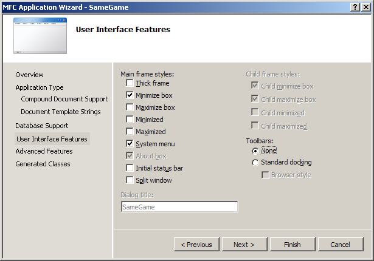
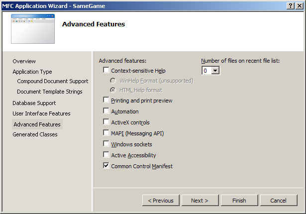

"The Same Game": A Simple Game from Start to Finish, Part 1 of 5By Ben MarchantForeword to Same GameIn this five part series, we'll be creating a version of a game called SameGame using the Microsoft Foundation Class library from start to finish. We'll include features beyond the simple removing of blocks in the game. We'll implement an undo/redo subsystem and some user configuration dialogs. We'll show you step by step with not only source code but screenshots how to build a fun game from start to finish and how to use Microsoft's MFC classes. Every article comes with complete source code, so you can build and run the game yourself. The rules to the SameGame are quite simple, you try to remove all of the colored blocks from the playing field. In order to remove a block the player must click on any block that is next to, vertically or horizontally, another with the same color. When this happens all of the blocks of that color that are adjacent to the clicked block are removed. All of the blocks above the ones removed then fall down to take their place. When an entire column is removed, all columns to the right are shifted to the left to fill that space. The blocks aren't shifted individually but as a column. The game is over when there are no more valid moves remaining. The goal is to end with an empty board in as little time as possible. Some versions of the SameGame use a scoring algorithm that can be implemented as an additional exercise for the user. PrerequisitesYou'll need to have a basic C++ knowledge of functions, recursion, classes, and inheritance. The code was written using Visual Studio 2005 on Windows XP although later versions of Visual Studio should be fine although the screenshots will look slightly different from what you will see. You must use the Standard or Professional edition of Visual Studio; Visual Studio Express cannot be used, because it does not come with MFC. If you are student, you may be able to get the Professional Version of Visual Studio for FREE from Microsoft DreamSpark. If you are not a student, and you do not have the full version of Visual Studio, can work through this tutorial using a trial version of Visual Studio. What You'll LearnFirst and foremost, you'll learn some basics of how to create your own game. You'll learn about the Microsoft Foundation Class library and some basic usage and the Document/View architecture paradigm. Here's an outline of the series, with links to each article:
Why MFC?MFC is an easy-to-use library, especially for a simple game like the one we want to make. It will make it easy to create an application with a true Windows look-and-feel. Starting the Same Game ProjectIn this article we'll be using Visual Studio 2005 to create our game. The following instructions can easily be adapted to all other versions of Visual Studio. First start up Visual Studio and create a new project. The type of project is "Visual C++" -> "MFC" -> "MFC Application". Next the MFC application wizard will appear. If you do not choose the name SameGame, then the names of your classes will be slightly different than those that appear in this article. This allows you to select quite a few options that the resulting generated code will include. For our simple game we can disable quite a few of these options. The following graphics show which options to select in order to get the project just the way we want it. Selecting "Single document" allows the application to use the document/view architecture when multiple documents aren't necessary. The last setting of interest on this page is "Use of MFC". The two options are for a shared DLL or as a static library. Using a DLL means that your users must have the MFC DLLs installed on their computer, which most computers do. The static library option links the MFC library right into your application. The executable that is produced will be larger in size but will work on any Windows machine. Advance through the next three pages, taking the defaults until the following page is displayed. (If you are using Visual 2010, this screen does not have a "None" option for Toolbars. Just choose "Use a Classic Menu" without checking either toolbar.) A thick frame allows the user to resize the window. Since our game is a static size, un-check this option. A maximize box isn't needed, nor is a status bar or a toolbar. Advancing to the next page will bring you to the "Advanced Features" page. Turn off printing, ActiveX controls and set the number of recent files to zero. Since we won't actually be loading any files, this option won't be necessary. The last page of the MFC Application Wizard presents you with a list of generated classes. Four classes that will be generated for you are the basis for the game. The first on the list is the view class, here it is called CSameGameView. I will come back to this class in a minute. The next class in the list is the application class. This class is a wrapper for the entire application and a main function is provided for your application by this class. The base class isn't selectable and must be CWinApp. The next class in the list is the document class, CSameGameDoc based on the CDocument class. The document class is where all of the application data is stored. Again the base class cannot be changed. The last class is the CMainFrame class. This CFrameWnd based class is the wrapper class for the actual window. The main frame class contains the menu and the client area view. The client area is where the actual game will be drawn. Now back to the view class. The base class is a dropdown with a list of views that are generally available, each with its own use and application. The default view type is CView, which is a generic view where all of the display and interaction with the user must be done manually. This is the one that we want to select. I will quickly go down the list and explain what each view type is used for, just for your information. The CEditView is a generic view which consists of a simple text box. The CFormView allows the developer to insert other common controls into it, i.e. edit boxes, combo boxes, buttons, etc. The CHtmlEditView has an HTML editor built into the view. The CHtmlView embeds the Internet Explorer browser control into the view. The CListView has an area similar to an Explorer window with lists and icons. The CRichEditView is similar to WordPad; it allows text entry but also text formatting, colors and stuff like that. A CScrollView is a generic view similar to CView but allows scrolling. Finally the CTreeView embeds a tree control into the view. Finishing the MFC Application Wizard will produce a running MFC application. Since we haven't written any code yet it is a very generic window with nothing in it, but it is a fully functioning application all the same. Below is a screenshot of what your generic application ought to look like. To build your application, you can go to the Debug menu, and select Start without Debugging. Visual Studio may prompt you to rebuild the project—select "Yes". Notice it has a default menu (File, Edit and Help) and an empty client area. Before we get to actual coding I'd like to explain a little about the document/view architecture that is used in MFC applications and how we are going to apply it to our game. Continue to page 2: Document/View Architecture |